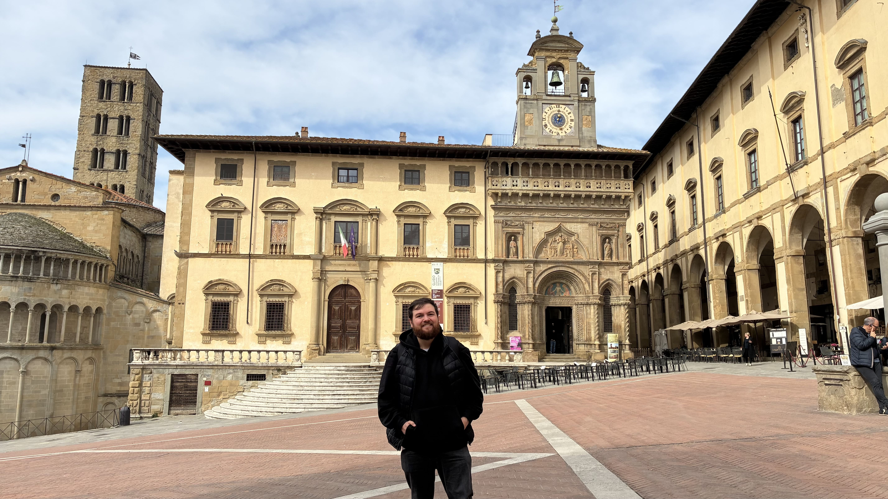
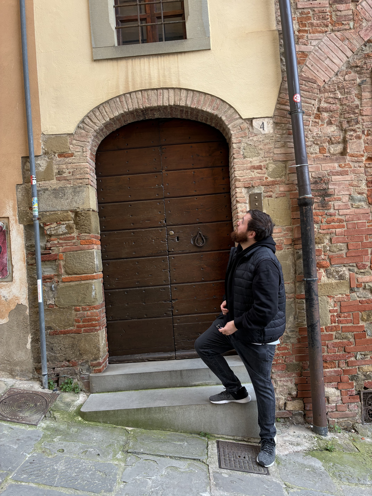
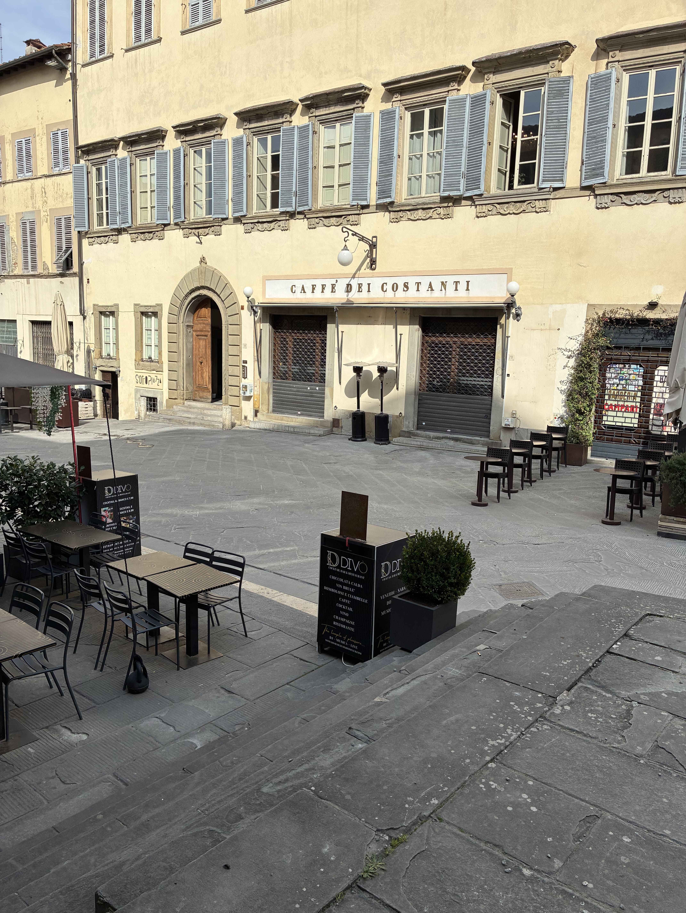
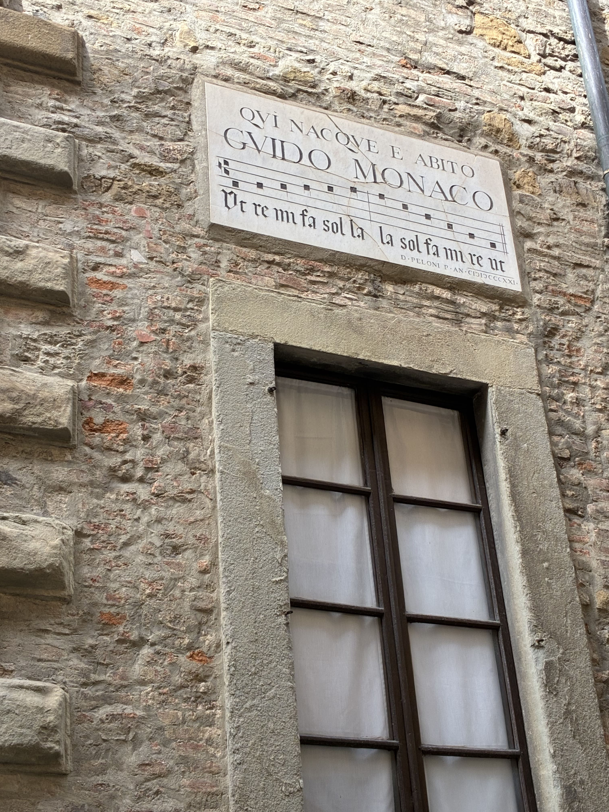
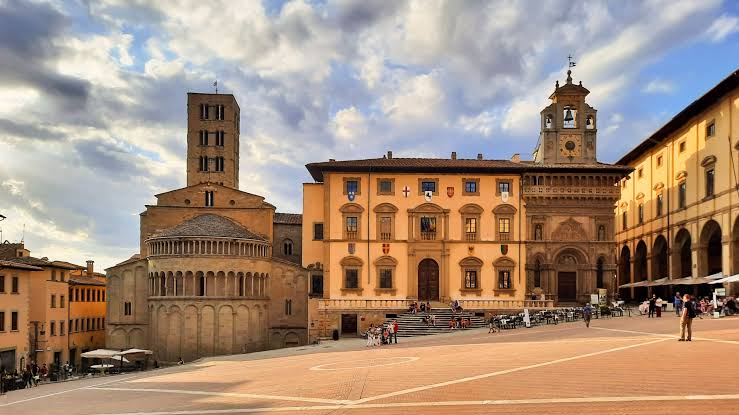

Arezzo
Arezzo, na Toscana, é uma cidade cheia de história e arte. Famosa pelos afrescos de Piero della Francesca e pelo seu centro medieval, também é conhecida pelo filme “A Vida é Bela”, que teve cenas gravadas ali. É um destino encantador e menos turístico, ideal para quem busca autenticidade.





Milão → Arezzo
Saindo da Estação Central de Milão, pegue um trem de alta velocidade até Florença. De lá, siga para Arezzo em um trem regional.
A viagem dura cerca de 3,5 a 4 horas e custa em torno de 25 a 40 euros
Pontos Turísticos Imperdíveis
- Piazza Grande: Uma das praças mais bonitas da Toscana, cenário de eventos e feiras medievais.
- Basílica de San Francesco: Famosa pelos afrescos de Piero della Francesca.
- Duomo di Arezzo: Catedral gótica com vitrais impressionantes.
- Casa de Petrarca: Residência do poeta italiano, hoje transformada em museu.
Gastronomia em Arezzo
- Primo piatto: Pici al ragù, massa típica da Toscana.
- Secondo piatto: Carne de javali e pratos rústicos da região.
- Sobremesa 🍷: Vin santo com cantucci, biscoitos de amêndoa mergulhados no vinho doce.
Dica dos Ussinhos 🐻💡
Arezzo é uma cidade menos turística que Florença, mas igualmente rica em arte e cultura. Vale a pena incluir no roteiro para sentir a atmosfera autêntica da Toscana e fugir das multidões.